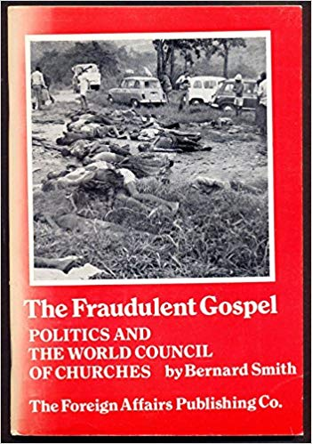

Olavo de Carvalho
Conselho Mundial das Igrejas é uma entidade pró-comunista que até financiam movimentos terroristas.
Ver também
- (Chapter 11) The fraudulent gospel: Politics and the World Council of Churches (http://www.angelusonline.org/index.php?section=articles&subsection=show_article&article_id=214)
- (Obituary) Bernard Smith (https://www.churchtimes.co.uk/articles/2006/13-january/gazette/bernard-smith)
- (Obituary) Bernard Smith (https://www.theguardian.com/news/2006/jan/19/obituaries.readersobituaries)
- World Council of Churches (WCC) (https://www.discoverthenetworks.org/organizations/world-council-of-churches-wcc/)
-
"O Conselho Mundial das Igrejas, a maior organização protestante do mundo, que congrega centenas de igrejas em todos os países, nominalmente para objetivos “ecumênicos”, é notoriamente uma entidade pró-comunista, que apóia e subsidia movimentos revolucionários terroristas."
O inimigo é um só (http://olavodecarvalho.org/o-inimigo-e-um-so/)